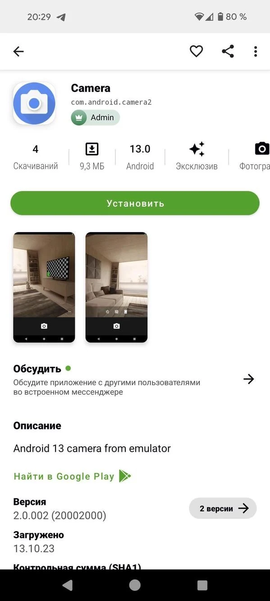

Appteka 深度盘点：从第三方应用市场到极客工具箱，它到底能做什么
Appteka 不只是一个能替代 Google Play 的 APK 市场，社区驱动的设计、内置的 APK 提取器、开放的评论生态让它在一众第三方商店里走得更远。这篇盘点从搜索、安装、社区、安全、技术五个能力域系统拆解。
Appteka 在中文互联网的存在感不算高——你搜「应用商店」大概率跳出 Google Play、华为应用市场、TapTap 这些名字。但对经常需要装海外 APK、想绕过 Play Protect 限制、或者单纯想在 Google Play 之外找一个更开放的分发渠道的用户来说，Appteka官网 是一个被低估的选择。它不仅仅是一个能搜到 APK 的索引库，社区驱动的审核机制、内置的 APK 提取器、三引擎安全扫描，把一个「找应用装应用」的需求延伸成了一套完整的 Android 极客工具箱。这篇盘点从能力域的角度，系统地把 Appteka 能做什么、亮点在哪、哪些场景用得上，以及它的局限，一次性梳理清楚。
一、搜索与发现：比你想的更「懂」海外应用，但中文是硬伤
搜索引擎是任何应用市场的入口。Appteka 的搜索逻辑围绕「开发者上传时的应用名 + 后端自动翻译 + 社区志愿者贡献中文名」三个来源构建。前两者决定了它在英文应用名上的精准度——你搜 Signal、Notion、ProtonVPN 这类海外产品的英文原名，命中率几乎是百分之百。后者则决定了中文搜索体验的天花板。
这里有一个中文用户高频踩的坑：搜中文名经常找不到，换英文立刻就出来。原因不是 Appteka 故意排斥中文，而是绝大多数海外开发者根本不填中文名，后端自动翻译引擎的质量也只能停留在「能看懂但不精准」的水平，社区志愿者的翻译覆盖量远远赶不上 Appteka 索引的应用总数。
实用对策有四条：直接搜英文软件名是最稳的；缩短关键词到一个词（搜「notion」比搜「Notion 国际版 安卓」命中面广）；先进入某个分类再搜——相当于在分类范围内做二次过滤，结果更精准；实在不行去官方网站搜，覆盖比移动端更广。
搜索结果列表的展示本身没什么特别，但进入应用详情页之后有几个值得细看的地方。Appteka 会把应用的版本历史完整列出来，每个版本都附带上架时间和更新日志——这对想回退到老版本的用户非常有用。Google Play 在这点上是封闭的，你只能拿到最新版。详情页还会标注 APK 签名指纹、文件大小、最低系统版本，这些信息 Google Play 客户端里基本看不到，但对判断一个 APK 是否被篡改过、是否与你当前设备兼容来说，非常实用。

二、安装与权限：第一次会麻烦，但之后一劳永逸
Android 8.0 引入的「每应用独立授权」机制是很多用户第一次用 Appteka 时的卡点。任何一个应用——不管是浏览器、文件管理器，还是 Appteka 自己——要触发 APK 安装，必须先单独获得「允许来自未知来源的安装」权限。
第一次用 Appteka 点下载时，系统会弹出一个设置页，里面就有「允许此应用安装未知应用」的开关，打开即可，不需要去手机的深层设置里翻。关键是这条权限对每个安装器单独生效——Chrome 需要开一次，Edge 需要开一次，Appteka 自己也需要开一次。一旦给 Appteka 开了，以后通过它下载的所有 APK 都不会再弹这个提示。
不推荐一次性给所有应用全开这个权限。理由很简单：你真正常用的 APK 来源大概率只有 Appteka 加上一个文件管理器，全开等于给系统安全留了一个不必要的口子，任何一个 app 都能在后台悄悄触发 APK 安装。
安装完成后建议保持 Play Protect 开着。它扫描整个手机已安装的应用，和「谁可以触发 APK 安装」是两件独立的事。推荐的组合是：给 Appteka 开未知来源权限 + 保持 Play Protect 全时扫描。
三、社区与评论：真实度比 Google Play 好，但样本小
Appteka 的评论生态和 Google Play 走了两条完全不同的路。Google Play 的评论区在算法干预和规模化刷分的双重作用下，已经严重偏离了用户真实体验——热门应用的 5 星评论里混着机器人文案，3 星以下的差评反而会被算法压下去很难看到。
Appteka 的社区规模小得多，但这个「小」反而是它的优势。刷分成本高——没有专门针对 Appteka 的刷分服务；开发者会直接在评论区回复用户反馈，Appteka 客户端里甚至内置了实时聊天就是为这个场景设计的；差评不会被刻意压低，你往下翻就能看到。
但它也有自己的问题。热门应用的评分总数可能才几百条，统计显著性不够；新上传的应用基本没评论，没人试就没人评。通用判断法是：优先看评论数 ≥ 50 条的应用，评论数太少就当成全新应用看待。
评论的质量判别也有几个实用原则：最新评论优先，老评论可能对应旧版本的体验；具体描述优于「好、推荐、快下载」这种短评；带截图的评论真实度最高——尤其是报错截图、闪退截图、权限申请截图。
除了应用级的评论，Appteka 还给每款应用配了一个专属的讨论区。讨论区的帖子比评论长、允许回复、开发者会直接参与。如果你对某款应用真的感兴趣、想深入了解使用体验，去讨论区看比评论区靠谱得多。

四、安全与提取：三引擎扫描 + 无 root APK 提取，是真的独到之处
Google Play 客户端不能提取 APK——下载安装之后 APK 就在过程中被系统删了。第三方应用商店里能提取的也很少，而且大多需要 root 才能访问系统分区里的 APK 文件。Appteka 的内置 APK 提取器走的是一条完全不同的路：通过 Android 系统标准的 PackageManager API 读取已装应用的 APK 路径，再把文件复制到 Appteka 自己的缓存目录，不需要 root。
这个设计的厉害之处在于它能提取系统预装应用。普通第三方安装器因为系统分区只读，根本碰不到预装应用的 APK。Appteka 因为走的是系统 API 而不是直接读文件系统，所以连厂商内置但 Google Play 找不到的应用（比如 MIUI 工具、ColorOS 插件）都能提取。
提取器在三个场景下特别有用。备份老版本系统应用——用了几年的 ROM，厂商预装的应用可能已经在 Google Play 下架或停更了，提取一份出来换 ROM 还能装回去；逆向分析和安全研究——极客用户提取 APK 反编译审代码，想深入了解这个过程的参数和方法可以翻Appteka文档，Appteka 的 GPL v3 开源客户端本身就适合做安全研究工具链的一环；在 Appteka 上发布自己的 APK——IDE 输出目录删了也没关系，从手机里重新提取再上传就行。
安全方面，Appteka 对所有上传的 APK 做三引擎扫描，通过的会打上 Verified safe 徽章。提取器本身不做扫描，如果你提取的是系统预装应用，安全与否由那个预装应用本身决定，通常没问题但也有极少数厂商预装带广告包的情况。
五、短板也要说
Appteka 不是一个完美的应用市场。中文搜索是最大的硬伤——索引机制的天然限制导致中文搜不到时必须换英文，后端翻译引擎和社区中文名贡献覆盖量都还有很大提升空间。社区规模小意味着热门应用的评分样本不够，新应用基本没评论，统计显著性不如 Google Play。客户端本身也还有一些小问题，比如不同 ROM 下的权限申请流程偶尔会有差异，部分系统加密的预装应用可能提取失败。
另外，Appteka 社区驱动的审核模式在速度上也不如 Google Play 的自动化流水线——热门新应用上架可能比 Google Play 晚几天。如果你追求的是「最快拿到最新版」，Google Play 还是更合适的选择。
什么样的人该用 Appteka
如果你经常需要装海外应用、Google Play 上被锁区找不到的 APK，Appteka 提供了一个不需要科学上网就能访问的分发渠道，这是最核心的使用场景。极客用户和安全研究人员会喜欢它的无 root APK 提取器——Google Play 和绝大多数第三方商店都没有这个功能，而且它基于系统 API 的实现方式本身就很干净。还有一类人是想备份手机里预装应用的 ROM 爱好者——提取一份 APK 保存，换 ROM 或厂商停更之后还能装回去，这个需求在其他渠道几乎没有覆盖。
Appteka 的客户端采用 Kotlin + MVP + Clean Architecture 技术栈，GPL v3 开源，客户端源码和配套文档资料在三个代码仓库都能拿到——GitHub 主仓库、国内访问更稳的 Gitee，以及备用镜像 GitCode。它不追求做成 Google Play 那样的超级商店，而是在「开放分发渠道 + 社区化审核 + 极客工具箱」这个定位上走得很扎实——对你来说，Appteka 到底值不值得用，取决于你有没有被 Google Play 的封闭性卡过脖子。